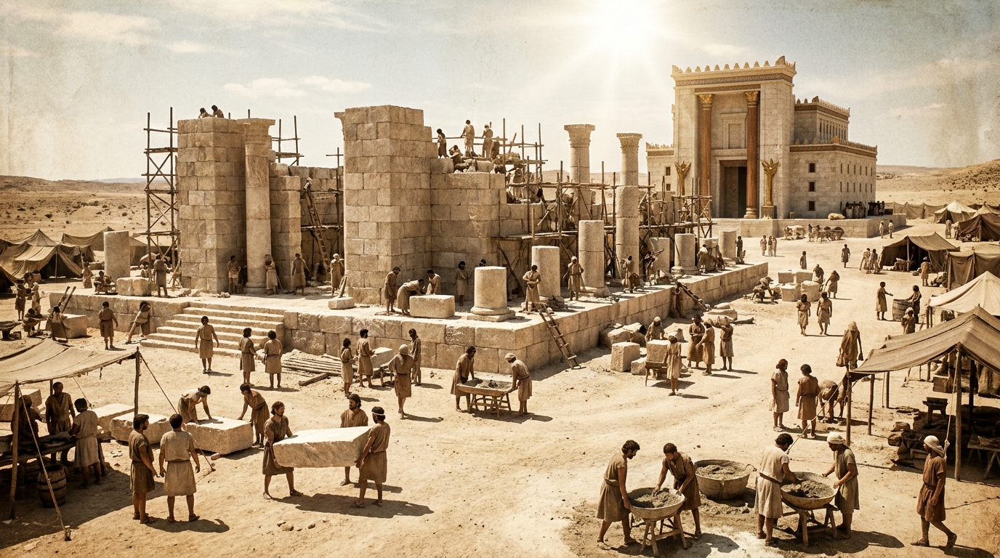

Priorizando a Casa de Deus
O livro de Ageu é curto, urgente e prático. Escrito após o retorno dos judeus do exílio na Babilônia, ele confronta o povo que estava focado em construir suas próprias casas luxuosas enquanto o Templo do Senhor permanecia em ruínas. Ageu chama o povo ao arrependimento e à ação, lembrando que a verdadeira bênção e prosperidade vêm quando colocamos Deus em primeiro lugar. Ele também traz uma profecia gloriosa de que a glória daquele novo templo superaria a do antigo.
Ficha Técnica
- Autor: O profeta Ageu.
- Tema Principal: A prioridade de Deus na vida do Seu povo, a obediência e a promessa da presença de Deus.
- Versículo-Chave: "A glória deste novo templo será maior do que a do antigo, diz o Senhor dos Exércitos. E neste lugar estabelecerei a paz, declara o Senhor dos Exércitos." (Ageu 2:9)
Estrutura
- O chamado para reconstruir o Templo (Cap. 1:1-15)
- A promessa de que a glória de Deus encherá o novo templo (Cap. 2:1-9)
- A bênção de Deus sobre o povo obediente (Cap. 2:10-23)